“Artistic Excellence is not measured in square feet!”
-Mona and Michael Heath
Tiny stages, tiny audiences, and tiny budgets. This is the reality for the Chicago area’s Non-Equity theaters (those not working within the union Equity contract). But as theater supporters and Non-Equity Jeff Special Award honorees Michael and Mona Heath expressed so succinctly at the 50th Non-Equity Jeff Awards, quality is high.

Actor and Jeff winner Parker Guidry welcomes Frankie Lee Bennett of “The Sponge Bob Musical to the red carpet. Photo: Tyler Core
Dressed in ruffles, sequins, and elegant gowns, over 500 enthusiastic theater artists, their friends, families, and supporters packed the Park West on March 25, to celebrate Chicago’s off-loop theaters.
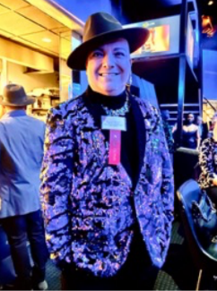
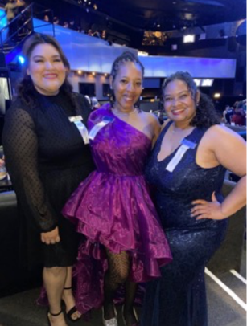 |
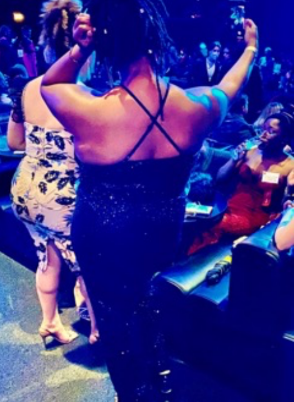 |
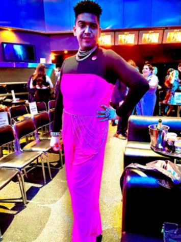 |
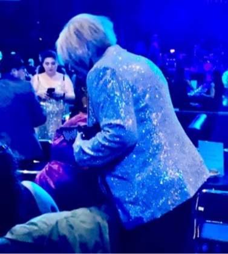 |
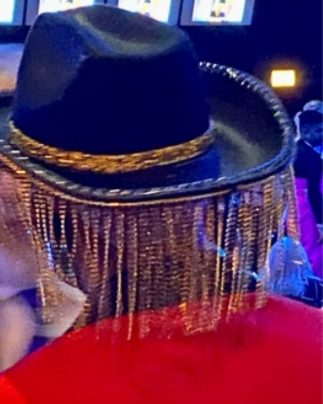 |
The show was energetically hosted by singer/actor Neala Barron and drag queen Ari Gato, bringing the right mix of humor and pacing to the occasion. When a winner spoke too long, the giant dome flashed red – no hook needed.
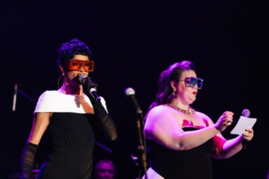
(L to R) Hosts Ari Gato and Neala Barron Photo: Tyler Core
A few statistics: Chicago’s Jeff Committee honors excellence in both Equity (fall awards show) and Non-Equity theaters. In this past Non-Equity season alone (January 2023-December 31, 2023), Jeff Committee members attended 91 Non-Equity productions and recommended 46 plays and musicals having at least one element eligible for awards. From these, 144 individual artists from 32 companies were nominated. Of these, 32 awards were given across 24 artistic and technical categories including everything from production and stage director to actor, scenic design, music director and costume design. Lacking the financial resources of Equity theaters, these smaller companies have no less ambition and creatively push boundaries of staging, content, and interpretation.
Relatively new at the Non-Equity Awards, the four-year old Refracted Theatre Company, won top honors with eight Jeff awards for production, direction, both principal performers, lighting, projection, sound design, and original music in a play. Its winning version of “Tambo & Bones.” about two Black men caught in a minstrel show, fits the company’s stated goal to “disrupt our socially accepted narratives by Illuminating another side of the story.” Theater Critic Kerry Reid with The Chicago Reader described the powerful play as “bold, messy, sardonic, angry, and thought provoking,” in keeping with the theater’s mission.
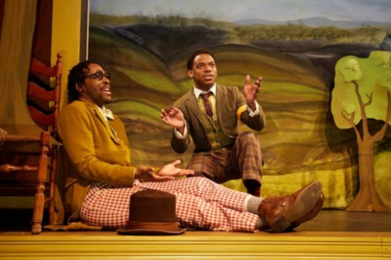
Jeff Award winning actors William Anthony Sebastian Rose and Patrick Newsom, Jr. in “Tambo and Bones”
A close second with six awards for two musicals, Kokand Productions won four Jeffs for “American Psycho,” a bloody parody of excesses of the 80’s. Its psychotic leading character Patrick Bateman was compellingly narcissistic and demented as played by Jeff-winning Kyle Patrick. Two additional Jeffs were won for the completely different and totally wholesome “The Sponge Bob Musical,” based on the animated TV show about the adventures of the inhabitants of Bikini Bottom. Kokandy has continually produced award winning musicals in the quirky basement space at the Chopin Theater. It led last year’s awards with six Jeffs for its production of “Sweeney Todd.” Kokandy’s goal is “to leverage the heightened reality of musical theater to tell complex and challenging stories with a focus on contributing to the development of Chicago-based musical theater artists and new musical theater works while raising the profile of Chicago’s storefront musical theater community.” A full list of Jeff Award winners can be found atwww.jeffawards.org.
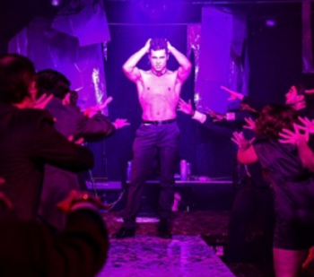
Jeff Award winning actor Kyle Patrick in “American Psycho” Kokandy Productions
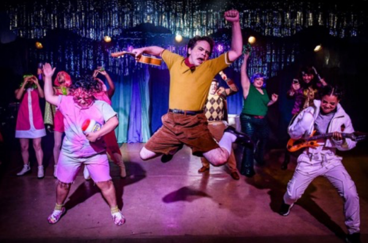
Jeff Award winning musical “Sponge Bob Square Pants” starring Frankie Lee Bennett Kokandy Productions
Fifty years ago, the Non-Equity Jeff Awards had a very different look. When the Equity Awards were created in 1968, there were no Non-Equity awards, but within five years, theater critic Jonathan Abarbanel recalls that Jeff member Richard Turner was among the first to recognize the growth of storefront theater in Chicago. After the 1973 off-loop season, the Jeffs, supported by Turner, created the Citation awards for the Non-Equity theater community. The award presentation was more of a wine-and-cheese event, according to Abarbanel; there was no sit-down theater event. The award itself was a paper certificate. Many of the early theaters of that era are no longer with us: The Absolute Theatre Company, Famous Door theatre Company, Old Town Players, among many more; others grew and later joined Equity like Steppenwolf and Court.
Abarbanel became chairman of the Citation wing in 1978 and served for three years. For his second awards show, he moved the event to Park West. “I saw the opportunity for a full sit down evening, the opportunity to have some catered food, and with the technical equipment Park West had, we were able to create slides… The manager of the Park West welcomed the opportunity for the Jeffs to move there; he gave us the house for nothing…they let us bring in an outside caterer, and for the first two years it was George Jewel. He charged $15 a head.” The Citation team was concerned about filling the house, but the first year they attracted some 400 guests and the second year, filled the house of 500. “There was also the order that we could not lose money. Not only did we not lose money, but we had a surplus!” He also arranged for a hard-wood plaque to replace the paper certificate. In more recent years, the name was changed to the Non-Equity Jeff Awards and a more robust physical award was designed.
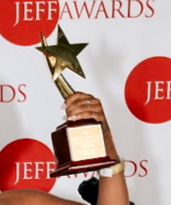
Abarbanel recalls the mood of the period. “There was a lot of ensemble energy, groups would get together and form their own theater companies…Creative people did it for love, not money. Almost nobody got paid at that time. There was a great deal of comradery, but that still exists. There is always that sharing.”
“I’m going to state this very strongly,” Abarbanel continued, “You certainly are aware that Chicago is regarded by some as the best theater city in the country, not the size of its commercial theater but the energy and creativity of its productions, the ensemble sense, all that… None of that would have existed without its off-loop theater or storefront theater which began and was largely a non-equity phenomenon. Its initial energy was political. It came out of the anti-war movement, the protest movement, the early baby boomers who were coming of age. They wanted nothing to do with commercial theater. There was little Equity theater in Chicago back then. Those early baby boomers wanted theater that spoke to them. They are still the audience.”
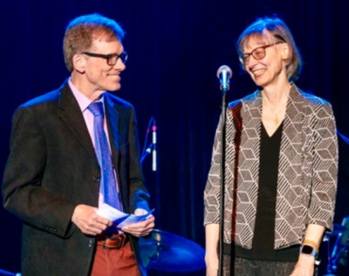
Michael and Mona Heath honored with Non-Equity Jeff Special Award Photo: Tyler Core
Even with an enthusiastic audience, Non-Equity theaters rely on the generosity of donors to survive. Honored this year with the Non-Equity Jeff Special Award were Mona and Michael Heath, whose Michael and Mona Heath Fund, a donor advised fund of The Chicago Community Trust, is of critical importance to Chicago’s theater community. Passionate theatergoers, the Heaths both retired from the tech industry and now support dozens of non-equity theaters with grants for everything from emergency needs like fire damage to full productions.
Chicago theaters are gradually recovering from the financial debacle of the Covid epidemic. Both attendance and subscriptions are slowly picking up. An appreciation for the store-front Non-Equity theater companies will feed this recovery; that’s the goal of the Non-Equity Jeff Awards, to honor the excellence to be found in Chicago’s vibrant small theater community and to encourage audiences to try something new, something experimental, something founded in passion for the art form.
John Buranosky, co-producer with AJ Wright of the 50th Non-Equity Jeff Awards, has high hopes that in days following the event, attendees will “1. Say we celebrated Chicago Theater. 2. Notice the richness and diversity of our city to make theater. 3. Be grateful for the Jeffs and continue to celebrate theater!”